UNIVERSIDAD POLITÉCNICA DE PACHUCA
PROGRAMACIÓN MÓVIL
REPORTE DE PRÁCTICA:
APLICACIÓN DE CONTACTOS CON
SINCRONIZACIÓN OFFLINE Y API REST EN LARAVEL
DOCENTE: Miguel Angel Montoya Cerro
ALUMNO: Jesus Alberto Moreno Cortes
ASIGNATURA: Programación Móvil
GRUPO: SFTW_08_01
FECHA: 18 de junio de 2026
La presente práctica tiene como objetivo el desarrollo de un sistema móvil híbrido que integra una base de datos local desconectada (Local-First) con una API REST publicada en Laravel y ejecutada dentro de contenedores Docker. La aplicación móvil (contactos_app), desarrollada en Android Studio con Kotlin y Jetpack Compose, se sincroniza de manera asíncrona con el backend (red_app).
GET, POST,
PUT/PATCH y DELETE sobre el recurso /api/users.
User e Image mediante migraciones y Eloquent.
El sistema adopta el patrón MVVM (Model-View-ViewModel) en Android y el patrón Resource / Controller en Laravel, comunicándose a través de HTTP/JSON mediante la librería Retrofit2.
| Capa | Tecnología | Función |
|---|---|---|
| UI | Jetpack Compose | Interfaz declarativa reactiva |
| Estado | StateFlow / ViewModel | Gestión reactiva del estado |
| Base de datos local | Room (SQLite) | Persistencia offline de contactos |
| Red | Retrofit2 + OkHttp3 | Llamadas HTTP a la API REST |
| Sincronización | WorkManager | Tareas en segundo plano con restricción de red |
| Backend | Laravel 11 (PHP 8) | API REST con Eloquent ORM |
| Base de datos remota | PostgreSQL 18 | Persistencia de usuarios e imágenes |
| Contenedores | Docker / Laravel Sail | Entorno de ejecución del backend |
ContactRepository guarda el cambio en Room inmediatamente (ID negativo si es offline)SyncAction en estado PENDINGSyncScheduler.syncNow() activa el SyncWorker vía WorkManagerDONEFlow<List<Contact>> de Room. Al reconectarse,
NetworkMonitor dispara syncWithApi() para actualizar la BD local con
los datos remotos.
La API está definida en routes/api.php mediante un Route::resource
que expone los cinco endpoints requeridos. Las respuestas son serializadas por
UserResource sin envoltura adicional gracias a
JsonResource::withoutWrapping().
| Método | Ruta | Acción | Código de Respuesta |
|---|---|---|---|
| GET | /api/users | Listar todos los contactos (con imagen polimórfica) | 200 OK |
| GET | /api/users/{id} | Obtener un contacto específico | 200 OK |
| POST | /api/users | Crear nuevo contacto | 201 Created |
| PUT | /api/users/{id} | Actualizar contacto completo | 200 OK |
| PATCH | /api/users/{id} | Actualización parcial del contacto | 200 OK |
| DELETE | /api/users/{id} | Eliminar contacto e imagen asociada | 204 No Content |
{
"id": 17,
"name": "Viviana",
"email": "vivihernandez@gmail.com",
"phone_number": "7718954521",
"image_url": null,
"created_at": "2026-06-18T01:00:58.000000Z",
"updated_at": "2026-06-18T01:00:58.000000Z"
}
El campo image_url es resuelto mediante carga ansiosa (eager loading)
de la relación image en el controlador:
// UserController.php
public function index()
{
return UserResource::collection(User::with('image')->get());
}
// UserResource.php
'image_url' => $this->whenLoaded('image', fn() => $this->image?->url),
Para evitar colisiones entre los IDs autoincrementales del servidor PostgreSQL y los
registros creados offline, se implementó la siguiente estrategia en
ContactRepository.kt:
// Generar ID negativo local para evitar conflictos con IDs remotos val minId = contactDao.getMinId() ?: 0L val localId = if (minId < 0) minId - 1 else -1L val contactWithLocalId = contact.copy(id = localId) contactDao.insertContact(contactWithLocalId)
Un contacto creado offline recibe el ID -1, el siguiente -2, y así
sucesivamente. Cuando el SyncWorker lo sube exitosamente a la API, captura el ID
definitivo del servidor y reemplaza la fila local:
// SyncWorker.kt — Promoción de ID local negativo → ID remoto positivo
val created = api.createUser(dto)
val remoteId = created.id
if (remoteId != null && remoteId != contact.id) {
contactDao.deleteContact(contact) // borra la fila con id=-1
contactDao.insertContact(contact.copy(id = remoteId)) // inserta con id=17
syncDao.updateContactLocalId(contact.id, remoteId) // actualiza la cola
}
syncDao.markAsDone(action.id)
sync_actions)| Columna | Tipo | Descripción |
|---|---|---|
| id | Long (PK) | Identificador autoincremental |
| contactLocalId | Long | ID del contacto (negativo si es offline) |
| action | String | Tipo de operación: CREATE, UPDATE o DELETE |
| status | String | Estado: PENDING → DONE o FAILED |
| retryCount | Int | Número de reintentos fallidos |
| createdAt | Long | Timestamp para orden cronológico de ejecución |
El NetworkMonitor encapsula un ConnectivityManager.NetworkCallback
en un StateFlow<Boolean>. El ContactViewModel lo observa y
cuando transiciona de false → true lanza
SyncScheduler.syncNow() de manera automática, sin intervención del usuario.
La relación polimórfica permite que la tabla images almacene imágenes asociadas a
cualquier modelo del sistema (actualmente User), sin necesidad de crear una tabla
de imágenes por cada entidad.
imagesSchema::create('images', function (Blueprint $table) {
$table->id();
$table->string('url');
$table->morphs('imageable'); // genera: imageable_id (BigInt) + imageable_type (String)
$table->timestamps();
});
User — Relación morphOne// app/Models/User.php
use Illuminate\Database\Eloquent\Relations\MorphOne;
public function image(): MorphOne
{
return $this->morphOne(Image::class, 'imageable');
}
Image — Relación inversa morphTo// app/Models/Image.php
public function imageable()
{
return $this->morphTo();
}
Cuando se crea o actualiza un contacto enviando el campo image_url, el controlador
registra automáticamente la fila en la tabla images con:
imageable_type = "App\Models\User" — identifica a qué modelo perteneceimageable_id — el ID del usuario propietario de la imagenurl — la URL de la imagen de perfil (e.g., de picsum.photos)
El backend red_app se ejecuta mediante Laravel Sail dentro de
contenedores Docker. En la siguiente captura se observan los tres servicios activos:
laravel.test-1 (servidor PHP en el puerto 8080), pgsql-1 (PostgreSQL
en el puerto 5439) y mysql-1.
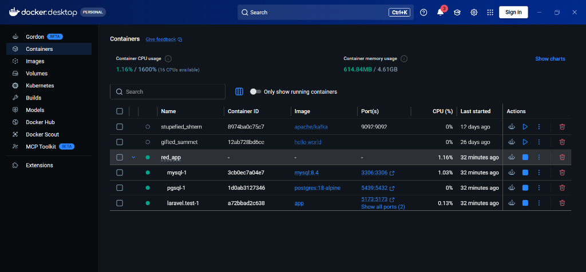
La petición GET http://localhost:8080/api/users retorna el arreglo completo de
usuarios registrados en PostgreSQL. La respuesta llega sin envoltura de clave
data gracias a JsonResource::withoutWrapping(), con código
200 OK y tamaño de 3.83 KB.
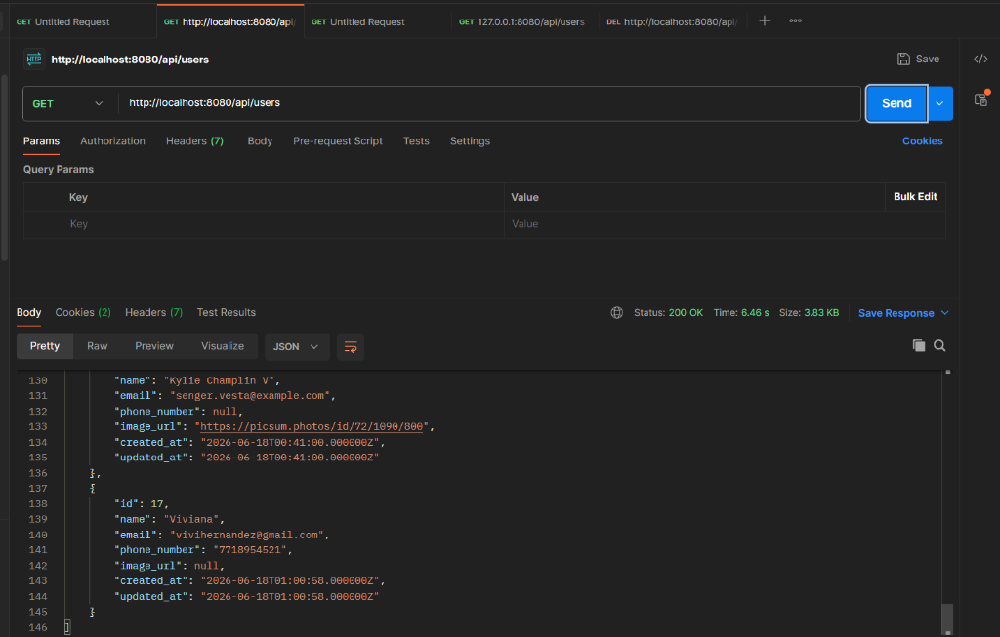
GET /api/users · Status 200 OK ·
Respuesta JSON con campos id, name, email, phone_number, image_url.
La petición POST http://localhost:8080/api/users con el cuerpo JSON
{"name":"Jovanny","email":"jovanny@gmail.com","password":"12345678"}
crea el contacto en PostgreSQL y retorna el objeto creado con su ID asignado por el servidor
(id: 16), código 201 Created.
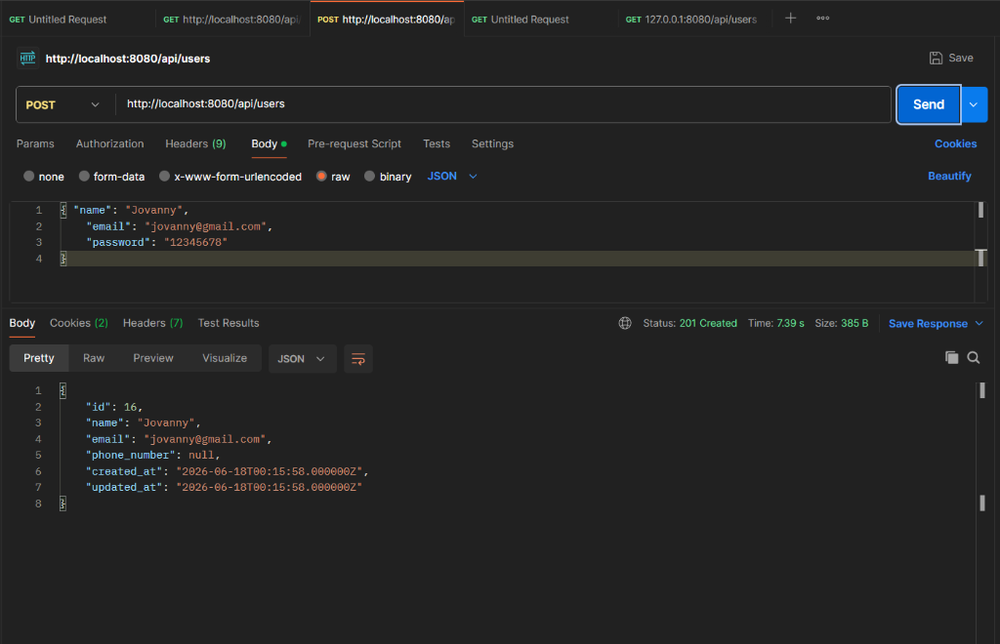
POST /api/users · Status 201 Created ·
Contacto "Jovanny" creado con id: 16.
La petición PUT http://localhost:8080/api/users/16 actualiza el nombre del
contacto de "Jovanny" a "Jova" y modifica su email. La respuesta regresa el objeto actualizado
con código 200 OK, confirmando que el campo updated_at fue
modificado correctamente.
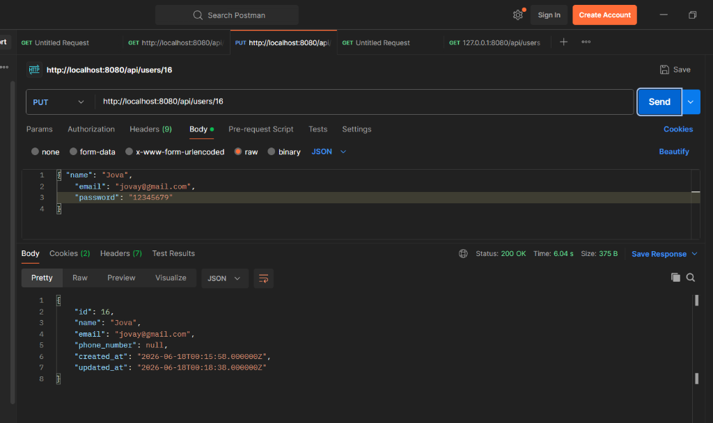
PUT /api/users/16 · Status 200 OK ·
Contacto actualizado: nombre "Jova", email "jovay@gmail.com".
Con conexión a Internet activa, la aplicación descarga los contactos de la API de Laravel y
los muestra ordenados alfabéticamente por inicial. Las fotos de perfil se cargan desde las
URLs polimórficas almacenadas en la tabla images del servidor.
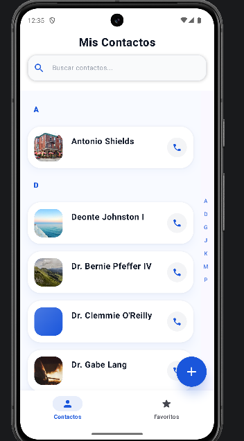
Para demostrar el funcionamiento offline, se activó el Modo Avión en el
emulador Pixel 8 API 34 mediante el panel de notificaciones. Inmediatamente la app detecta la
pérdida de conectividad a través del NetworkMonitor y muestra un
banner rojo animado en la parte superior de la pantalla.
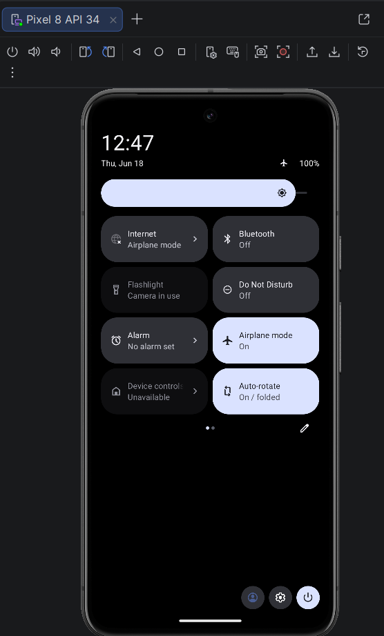
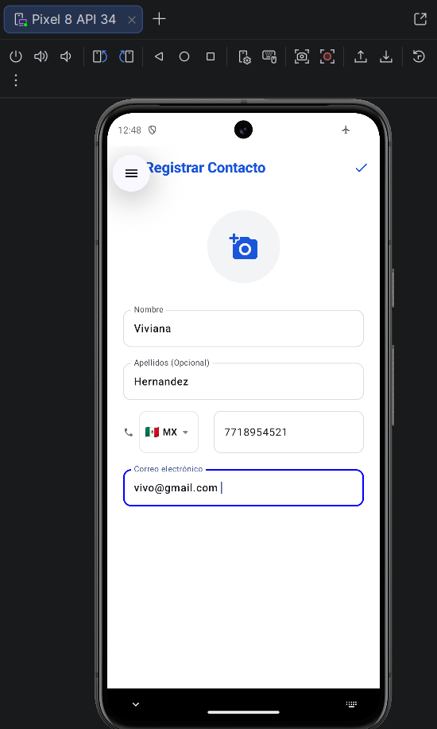
Al guardar, el contacto Viviana aparece inmediatamente en la lista de
contactos con su número de teléfono (7718954521) y el banner rojo
"Sin conexión · Los cambios se sincronizarán al reconectarse" permanece visible,
indicando que la acción está pendiente de sincronización.
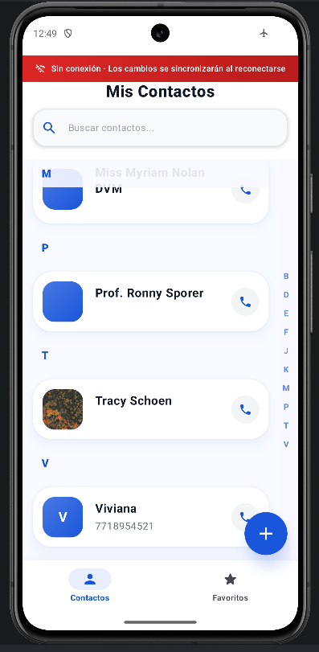
Mediante el Database Inspector de Android Studio se inspeccionan en tiempo
real las tablas de la base de datos Room del emulador. La tabla contacts muestra
a Viviana con id = -1 (ID negativo temporal para evitar colisiones con el
servidor) y la tabla sync_actions muestra la acción encolada.
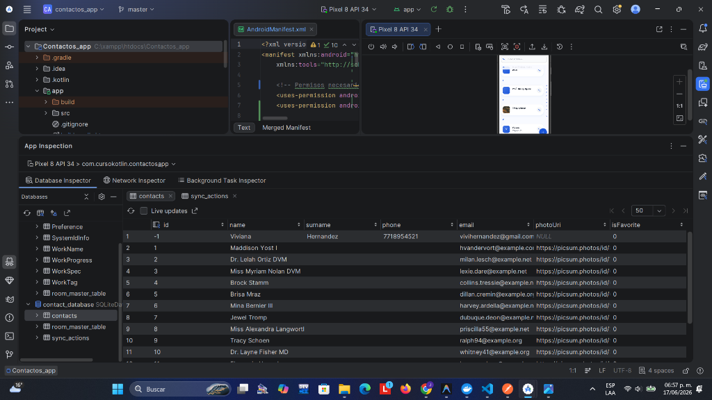
contacts — Viviana en id = -1
(ID negativo offline), los demás contactos con IDs positivos del servidor.
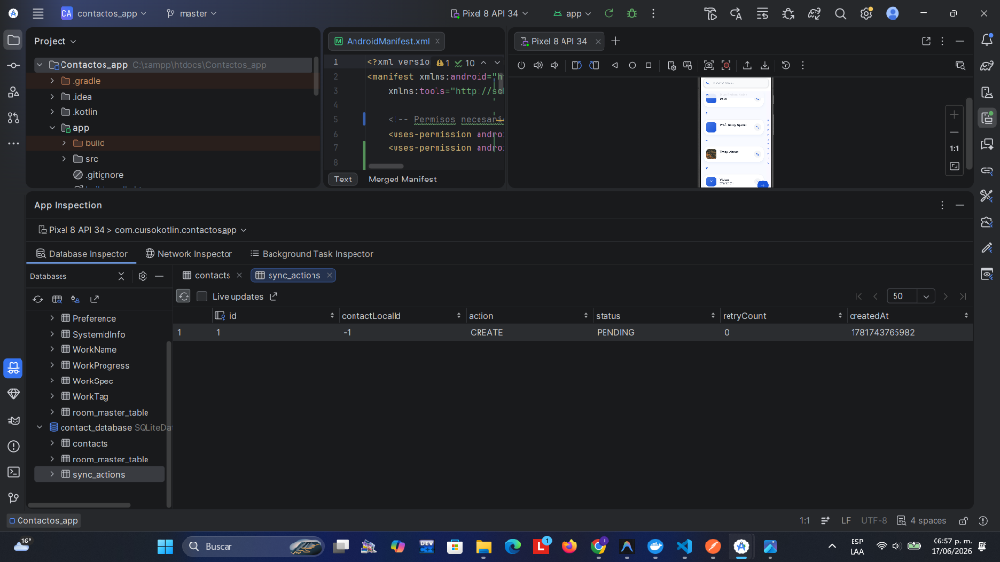
sync_actions —
action = CREATE, contactLocalId = -1,
status = PENDING.
id = -1 en contacts → Contacto creado localmente sin enviar a la API.contactLocalId = -1 en sync_actions → La cola sabe que debe subir
este contacto cuando regrese la red.status = PENDING → Aún no se ha procesado porque el dispositivo estaba offline.retryCount = 0 → Primer intento pendiente, sin reintentos previos.
Al desactivar el Modo Avión, el NetworkMonitor detecta la reconexión y dispara
SyncScheduler.syncNow() automáticamente. El SyncWorker procesa la
cola: envía el contacto Viviana a la API (POST /api/users), recibe el ID
definitivo del servidor (id = 17), reemplaza la fila local con id = -1
y vacía la cola.
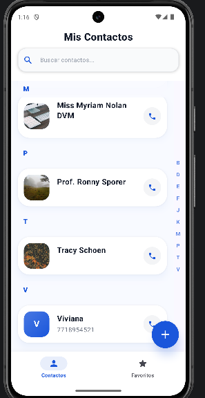
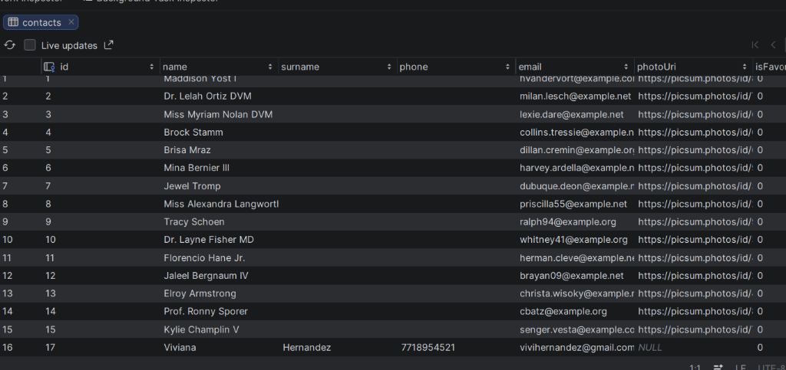
contacts post-sincronización —
Viviana ahora tiene id = 17 (ID real del servidor PostgreSQL).
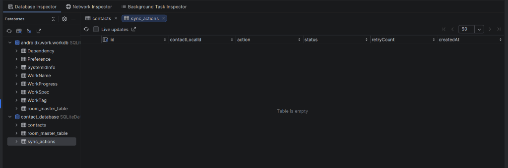
sync_actions — Table is empty.
La acción fue procesada exitosamente y limpiada por clearCompleted().
images — Relación Polimórfica en PostgreSQL
La consulta a la tabla images de PostgreSQL (realizada con DBeaver conectado a
localhost:5439) demuestra que cada imagen de perfil está correctamente vinculada
a su usuario mediante las columnas polimórficas.
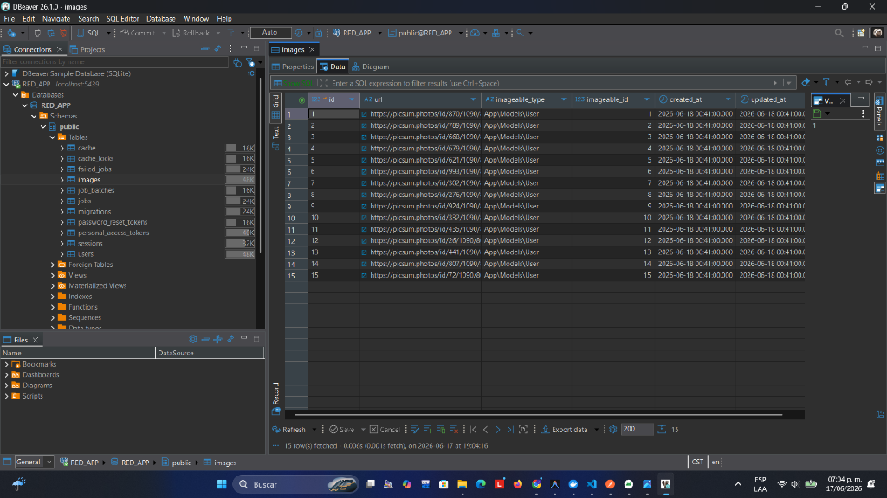
images en PostgreSQL (DBeaver) —
15 filas donde imageable_type = 'App\Models\User' e
imageable_id corresponde al ID del usuario propietario de cada imagen.
imageable_type = "App\Models\User" → Laravel identifica que esta imagen
pertenece al modelo User.imageable_id → Referencia al campo id de la tabla
users. Cada usuario tiene su propia imagen de perfil asociada.url → URL de la imagen (en este caso de picsum.photos).images.
La implementación de la aplicación Mis Contactos demostró en la práctica la viabilidad y robustez del patrón Local-First en el desarrollo móvil moderno. A través de la integración de Room SQLite como fuente de verdad primaria y WorkManager como motor de sincronización en segundo plano, se logró un sistema que funciona de manera transparente para el usuario, independientemente del estado de su conexión.
La estrategia de IDs negativos temporales para contactos creados offline resolvió de forma elegante el problema de colisión de identificadores entre la base de datos local y el servidor remoto, garantizando la integridad de los datos durante el proceso de sincronización.
Por su parte, la relación polimórfica implementada en Laravel entre los modelos
User e Image mediante las columnas imageable_id e
imageable_type demostró ser una solución flexible y escalable para la gestión de
recursos multimedia, permitiendo que la misma tabla de imágenes pueda servir a múltiples
modelos sin duplicar estructuras de datos.
Finalmente, la arquitectura basada en contenedores Docker con Laravel Sail simplificó enormemente la configuración del entorno de desarrollo, garantizando reproducibilidad y consistencia entre diferentes máquinas de desarrollo.
Los cinco endpoints de la API REST (GET, POST, PUT,
PATCH, DELETE) fueron consumidos correctamente por la app Android,
cumpliendo con todos los criterios de evaluación establecidos en la práctica.